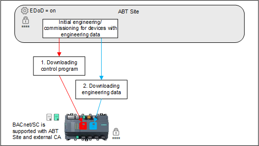
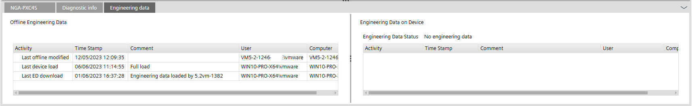
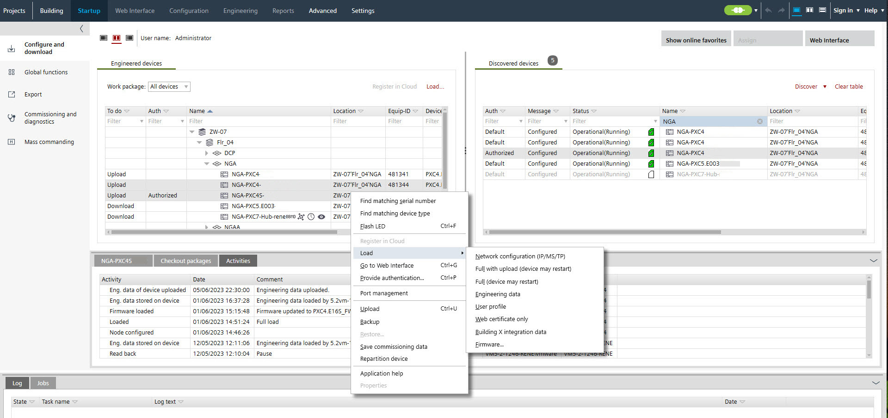
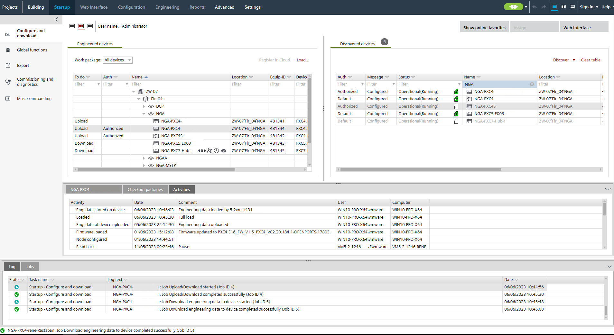

具有工程数据的设备的初始工程/commissioning

1. Downloading control program
- A WLAN or Ethernet connection is established.
Connecting to devices - The Enable engineering data on device check box is enabled.
Common settings tab - The engineering name is entered in Settings.
② User interface tab - The application configuration is downloaded with a full load and the device is restarted.
Downloading device configurations
- Go to Startup.
Configure and download - Open the Configure and download task.
- Select the device.
- Right-click and select Load > Full (device may restart).
- The control program is downloaded successfully.
2. Downloading engineering data

如果事先未执行完整下载，也可以将当前离线项目状态保存在设备上（使用设备上的工程数据）。
- Select the engineered device.
Note: Multi-select of devices is possible.
- The Engineering data tab shows that no engineering data have been downloaded (right part of the dialog).
- In the Engineered devices tab, click Load > Engineering data.

Note: If one or more devices of the type PXC4.E/M (less memory) are selected, a prompt appears before the download starts. This query does not apply to the PXC4E/M-2 (more memory) devices.
- The engineering data are downloaded to the device.
- The Activities tab shows the downloaded engineering data.
